🎧
JAVNXDJ • NÚÑEZ & SON
VERSIÓN 2026.10 • MANUAL DE USUARIO
Manual Integral de Uso y Operaciones
Guía visual y paso a paso para la gestión integral de eventos, presupuestos con efectos automáticos, seguimiento táctico por WhatsApp, escaletas musicales y modo cabina DJ en directo.
📩 Captura Automática de Leads (IMAP)
Sincronización de portales (Bodas.net, Madrigal Marketing) con alertas instantáneas por WhatsApp y memoria anti-duplicados.
💬 Evolution API & Guion Madrigal
Envío directo de WhatsApp multi-remitente, 1er contacto con enlace a /presupuesto, Técnica del NO y Posicionamiento.
🪪 Validación Automática DNI / NIE
Cálculo y autocompletado inteligente de la letra oficial del DNI/NIE en fichas de clientes, eventos y contratos.
✨ Packs, Dossier PDF y Caducidad
Selección de packs con humo y fuego frío automático, y dossier PDF con fecha límite de validez.
✍️ Firma Digital de Contratos
Portal de firma táctil para novios con auditoría forense de IP, fecha y hash legal.
🎛️ Cabina DJ & QR en Tiempo Real (3s)
Pantalla táctil para DJs en directo con peticiones musicales vía QR sincronizadas cada 3 segundos.
📑 Índice General de Contenidos
🚀 Módulos Principales y Captación
- 1. Introducción y Filosofía Multi-Marca: JAVNXDJ y Núñez & Son.
- 2. Acceso al Sistema y Roles: Inicio de sesión y seguridad.
- 3. Panel de Control (Dashboard): Métricas, embudo Madrigal y auto-sincronización.
- 4. Agenda, Sincronización IMAP de Leads y DNI Automático: Captura desde portales y alertas WhatsApp.
- 5. Ficha del Evento y Pestañas Multilínea: Ciclo de vida, horarios 24h y gestión integral.
- 6. WhatsApp Directo (Evolution API) y Método Madrigal: 1er Contacto +
/presupuesto, Técnica del NO y Posicionamiento de Marca.
- 7. Presupuestos, Packs y Efectos Especiales: Máquina de humo y fuego frío.
📑 Documentación y Operativa en Directo
- 8. Dossier y Presupuesto en PDF: Fecha de caducidad e imagen de marca.
- 9. Contratos y Firma Digital Online: Legalidad, DNI validado y trazabilidad.
- 10. Escaleta Musical y Formulario de Novios: Canciones clave.
- 11. Modo Cabina DJ en Directo: Interfaz de actuación para DJs.
- 12. Peticiones de Invitados (QR en 3 segundos): Interacción en pista en tiempo real.
- 13. Inventario y Material Técnico: Almacén y asignación de equipos.
- 14. Calculadora Pública de Presupuestos (
/presupuesto): Vinculación automática con leads.
💡
Nota de Privacidad: Todos los nombres, teléfonos, correos y fechas mostrados en los textos y ejemplos de este manual (ej. Carlos & Laura, 600 000 000, 12345678Z) son datos ficticios de demostración.
1 Introducción y Filosofía Multi-Marca
La plataforma está concebida como una herramienta integral para centralizar la gestión de contrataciones, propuesta comercial, logística y ejecución musical para empresas de eventos. Integra soporte nativo para marcas comerciales independientes bajo un único panel de control:
| Marca Comercial |
Enfoque y Tipología |
Comportamiento en la Plataforma |
| JAVNXDJ |
Eventos de autor, sesiones exclusivas de DJ, música electrónica, discotecas y eventos corporativos de alto nivel. |
Los presupuestos, contratos y correos adoptan el logotipo, colores oscuros y datos fiscales específicos de JAVNXDJ. |
| NÚÑEZ & SON |
Bodas integrales, ceremonias civiles/religiosas, cócteles, banquetes y montajes completos de sonido e iluminación. |
Aplica el logotipo clásico, paleta corporativa elegante, cláusulas nupciales y cuentas bancarias de Núñez & Son. |
2 Acceso al Sistema y Seguridad
Para acceder a la consola de administración, dirígete a la URL oficial del servicio según tu dominio activo:
🌐 URL de Acceso: https://app.nunezandson.com/login o https://app.javnxdj.com/login
Acceso Staff • Consola de Administración
https://app.nunezandson.com/login
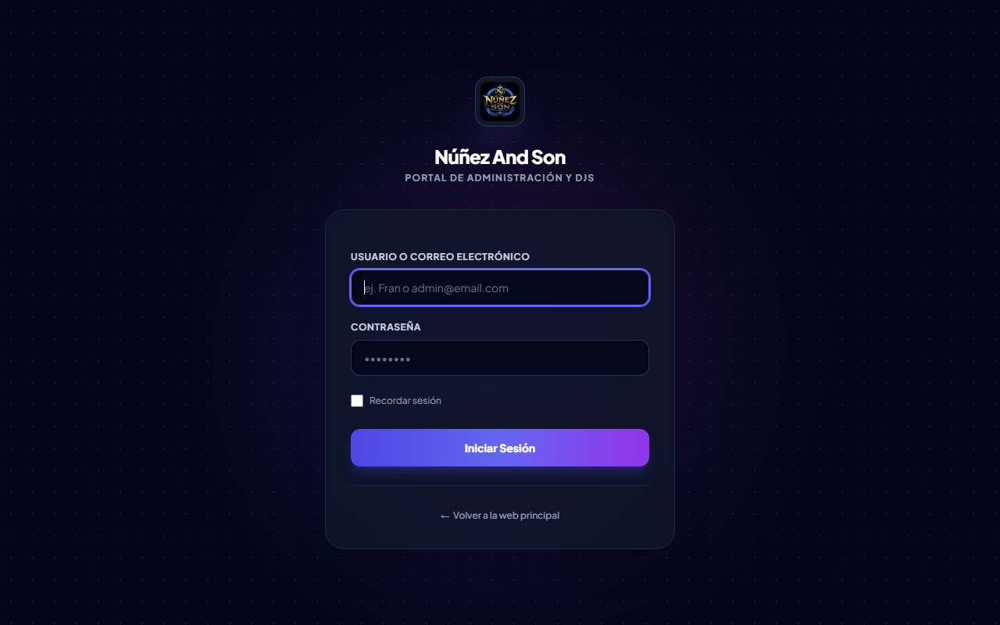
🔒 Figura 2.1: Pantalla de bienvenida y autenticación segura para administradores y equipo técnico de cabina.
👑 Rol Administrador
Control integral sobre todos los eventos, sincronización IMAP de leads, envíos por Evolution API, facturación, usuarios, inventario, precios de packs y configuración global (dispuesta en una cuadrícula clara de 2 filas de pestañas).
🎧 Rol DJ / Staff de Montaje
Acceso directo a su agenda asignada, horarios de montaje, escaletas musicales de las parejas y activación del Modo Cabina DJ en Directo.
3 Panel de Control (Dashboard) y Alertas
Al acceder al sistema, la pantalla de inicio presenta una radiografía en tiempo real del estado comercial y logístico de la empresa, además de ejecutar en segundo plano la comprobación automática de nuevos leads entrantes por correo:
Dashboard Principal • Métricas, Alertas y Próximos Eventos
https://app.nunezandson.com/admin/dashboard
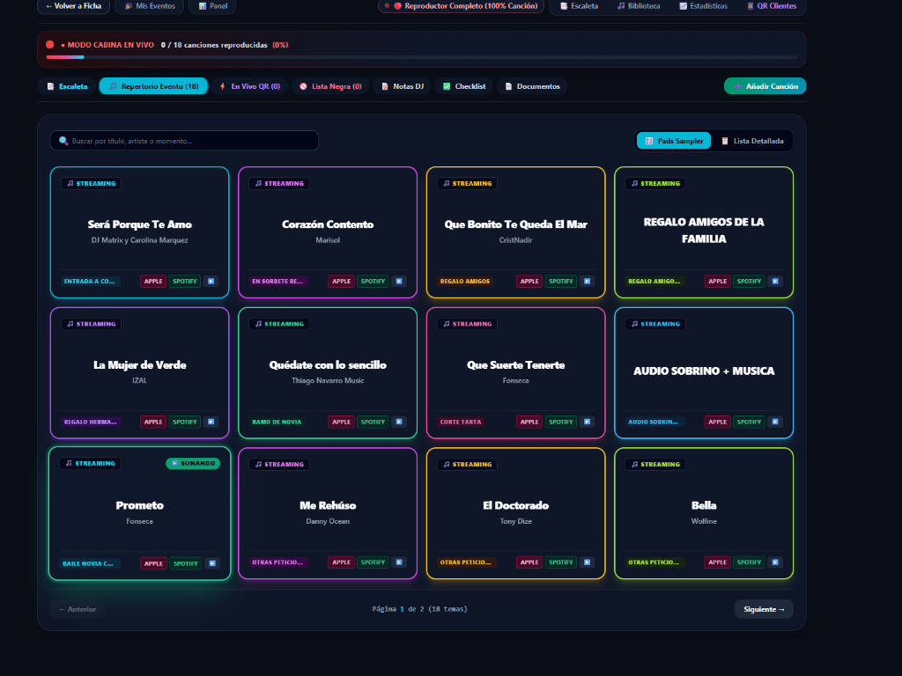
📊 Figura 3.1: Panel general con métricas de facturación, embudo de conversión, eventos próximos y banner de reactivación rápida.
Elementos clave del Dashboard:
- Métricas Financieras y Embudo Comercial: Facturación total emitida, importe pendiente de cobro, tasa de conversión de leads y previsión por temporadas (2027 / 2028).
- Banner de Seguimiento Activo: Muestra el número de clientes que llevan días sin responder, permitiendo lanzar recordatorios inmediatos sin entrar en cada ficha.
- Auto-Sincronización Silenciosa de Correo: Cada vez que un administrador entra al Dashboard o a Eventos, el sistema verifica automáticamente si han entrado nuevas solicitudes por email en los últimos minutos.
4 Agenda, Sincronización IMAP de Leads y Validación de DNI
El módulo Eventos (/admin/events) supervisa todas las fechas contratadas o en negociación e incorpora el botón directo "📩 Sincronizar Leads" junto a "➕ Nuevo Evento":
Listado de Eventos • Filtros, Sincronización IMAP y Vista de Tabla
https://app.nunezandson.com/admin/events
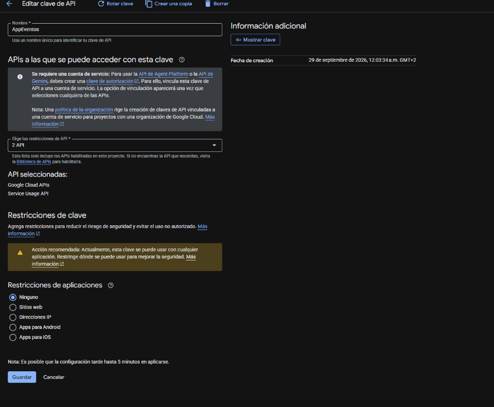
📅 Figura 4.1: Vista de tabla con filtros superiores por estado (Sin Respuesta, Confirmados, etc.), botón "📩 Sincronizar Leads" y acciones rápidas.
📩 Captura Inteligente de Emails (IMAP)
- Portales Soportados: Extrae automáticamente los datos del cliente desde correos de Bodas.net, Madrigal Marketing (decodificando quoted-printable, fecha, lugar, teléfono y campaña/creativo) y formularios web.
- Filtro Estricto Anti-Spam: Solo crea un cliente y evento si el correo contiene datos reales de solicitud (teléfono válido o fecha explícita del evento).
- Memoria Permanente Anti-Duplicados: Registra la huella única de cada solicitud. Si eliminas manualmente un evento del listado, queda bloqueado en memoria para que jamás vuelva a re-importarse aunque el email siga en el buzón.
- Notificación Multicanal Instantánea (App + Push + WhatsApp + Email): Al entrar un email de lead nuevo, la aplicación dispara automáticamente:
- Aviso en la Campana
🔔 de la App y Notificación Push con sonido en el móvil/ordenador con acceso en 1 clic a la ficha.
- Alerta por WhatsApp a los números de los administradores/socios con los datos de contacto, fecha, lugar y campaña.
- Correo electrónico de aviso a las cuentas de administración de la marca.
🪪 DNI / NIE Automático y Limpieza de Clientes
- Autocompletado de Letra DNI/NIE: En cualquier formulario (Clientes, Evento, Pareja, Contrato o Portal de Invitados), al escribir los 8 números de un DNI (ej.
12345678) o 7 de un NIE (ej. X1234567), el sistema calcula y añade automáticamente la letra oficial (12345678Z) mostrando el indicador ✅ DNI válido.
- Fusión y Limpieza de Contactos: En Clientes / Novios dispones de botones para fusionar contactos duplicados por teléfono/nombre y limpiar contactos sin eventos asociados.
🔔
Centro de Avisos en Tiempo Real (Campana 🔔 en Barra Superior)
En la esquina superior derecha del panel dispones de la campana 🔔 Avisos de WhatsApp y Email. La aplicación comprueba automáticamente cada pocos segundos si algún cliente ha respondido por WhatsApp o si ha entrado un nuevo email en el buzón, haciendo sonar un aviso acústico, mostrando una notificación nativa en tu móvil/navegador (pulsando en "Activar notificaciones push") y llevándote directamente al evento al hacer clic.
5 Ficha del Evento y Navegación Multilínea
Al pulsar en "Gestionar" sobre cualquier evento, se abre su ficha detallada con una barra de pestañas adaptable en varias líneas (para ver todas las secciones de un vistazo sin desplazamiento lateral oculto) y soporte completo para Modo Claro y Modo Oscuro:
| Estado |
Distintivo |
Significado y Acción Recomendada |
| Borrador / Nuevo |
📝 Borrador |
Petición recién recibida. Se están definiendo los servicios y necesidades. |
| Sin Respuesta |
⏳ Sin Respuesta |
Lead entrante o presupuesto enviado pendiente de contestación. Activa el embudo de seguimiento Madrigal. |
| Confirmado |
🟢 Confirmado |
Cliente ha aprobado el presupuesto o abonado la señal. Fecha 100% bloqueada en agenda. |
| Rechazado / Descartado |
❌ Rechazado |
El cliente no contrata o se descarta el expediente. Libera la fecha en el calendario. |
Ficha de Evento • Banner Inteligente de Seguimiento (Modo Oscuro)
https://app.nunezandson.com/admin/events/{id}
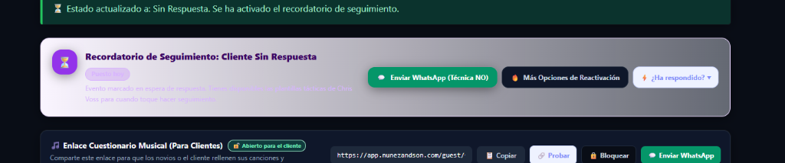
⏳ Figura 5.1: Banner de seguimiento en ficha con contador de días, urgencia dinámica, botón de 1-clic a WhatsApp y menú rápido "¿Ha respondido?".
6 WhatsApp Directo (Evolution API), Método Madrigal y Posicionamiento
En la ficha del evento dispones de una consola de conversación integrada con Evolution API que permite elegir desde qué número/marca enviar el mensaje y cargar con un clic cualquiera de las Plantillas Rápidas Madrigal & Comerciales:
Hub de Plantillas WhatsApp • Estrategia de Captación, Seguimiento y Posicionamiento
https://app.nunezandson.com/admin/events/{id} (Consola WhatsApp)
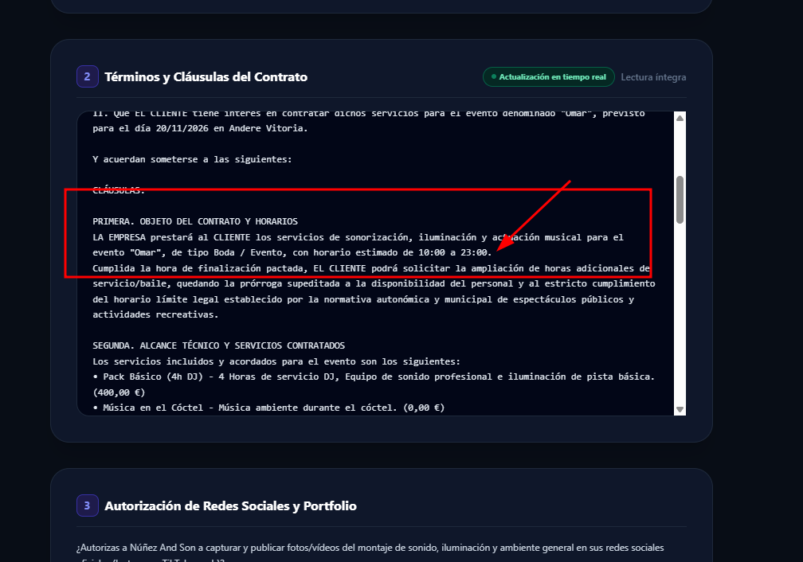
💬 Figura 6.1: Selector de plantillas tácticas para Primer Contacto, Seguimiento por días (Método Madrigal) y Posicionamiento de Marca.
Guion Completo de Plantillas Rápidas (Por Fase Comercial):
👋 1. Primer Contacto + Enlace /presupuesto
Ideal nada más entrar un lead desde Madrigal Marketing o Bodas.net. Confirma que la fecha está libre y les invita a marcar los servicios que necesitan en la calculadora online:
"¡Hola Carlos y Laura! 👋 Acabo de consultar nuestra agenda para el 15 de junio de 2027 en Finca El Olivar y ¡tenemos la fecha disponible! 🎉 Para poder prepararos el presupuesto a medida necesitamos saber qué servicios necesitáis (ceremonia, cóctel, banquete, DJ barra libre, fuego frío...). Podéis seleccionarlos en 1 minuto aquí: 👉 https://app.nunezandson.com/presupuesto"
También dispones del botón "🟢 1er Contacto (Madrigal)" con la pregunta rompehielos sobre la finca y el estilo de fiesta.
👑 2. "No es nuestro cliente" (Posicionamiento ante Precio)
Cuando un contacto dice que "se le va de presupuesto" y no interesa rebajar tarifas, responde con máxima educación, elegancia y autoridad de marca:
"¡Hola Carlos y Laura! 👋 No hay ningún problema, os agradecemos mucho vuestra sinceridad. Con total transparencia y cariño, entendemos que más que tratarse de que se os vaya de presupuesto, simplemente es que no somos el perfil de servicio que estáis buscando (ni vosotros el perfil de cliente para nosotros en esta ocasión). Nosotros nunca recortamos en calidad técnica ni montaje para competir por precio... Liberamos desde este momento vuestra fecha en nuestra agenda."
Si por el contrario sí deseas ajustar el equipamiento para cerrar la fecha, utiliza el botón "💰 Objeción Precio (Adaptar)".
🎯 3. Día 3, Día 7 (Escasez 24h) y Técnica del "NO" (Día 10)
- 💡 Dudas (Día 3): Toque cercano ofreciendo ajustar horarios o extras tras enviar el dossier.
- ⚡ Escasez 24h (Día 7): Avisa de otra consulta para la misma fecha y otorga 24h de prioridad por cortesía.
- 🎯 Técnica NO (Día 10 - Chris Voss): "¿Habéis decidido descartar la opción de contar con nosotros para vuestra boda?" — activa una respuesta inmediata.
🔒 4. Cierre de Expediente por Silencio (Día 15+)
Cuando no hay respuesta tras el seguimiento, cierra el expediente con elegancia activando aversión a la pérdida (FOMO):
"Para no ser pesados ni saturaros con más mensajes, cerramos vuestro expediente por nuestra parte... Si cambiáis de opinión antes de que la fecha se ocupe definitivamente, sabéis dónde encontrarnos."
💬
Recepción de Respuestas de WhatsApp y Notificación Instantánea
Cuando un cliente contesta por WhatsApp, el webhook de Evolution API registra el mensaje en el historial de la ficha del evento, reactiva automáticamente el evento de Sin Respuesta a Borrador y dispara un triple aviso inmediato: Notificación en la App (Campana 🔔 + Push móvil/escritorio con sonido), mensaje de alerta al WhatsApp de los socios y correo electrónico de aviso con enlace directo al evento.
7 Presupuestos Inteligentes, Packs y Efectos
La pestaña Presupuesto permite generar propuestas comerciales con suma precisión. Los packs prediseñados integran efectos especiales de forma automática:
Configurador de Packs y Efectos Especiales
https://app.nunezandson.com/admin/events/{id}#budget
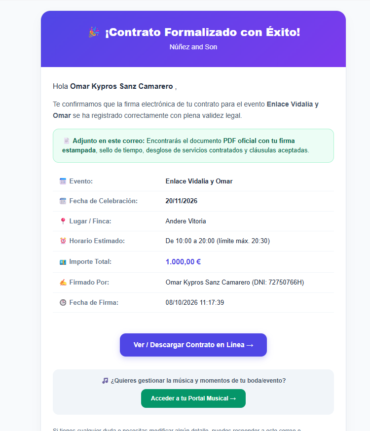
✨ Figura 7.1: Selección de Pack (Básico, Premium, Exclusivo) con activación automática de Máquina de Humo y Efectos Especiales.
Automatización de Efectos Especiales por Pack:
| Pack Seleccionado |
Efecto de Humo (Atmósfera) |
Fuego Frío (Sparkulars) |
Comportamiento en el Presupuesto |
| Pack Básico |
No incluido (Opcional) |
No incluido (Opcional) |
Configuración esencial de sonido e iluminación básica para baile. |
| Pack Premium |
✅ Incluido (0,00 €) |
Opcional por máquinas |
Se marca automáticamente la opción de Máquina de Humo incluida sin coste adicional. |
| Pack Exclusivo |
✅ Incluido (0,00 €) |
💥 Activo por máquinas |
Marca automáticamente Humo + Fuego Frío para entrada/baile nupcial. |
Cálculo de Fuego Frío por Número de Máquinas
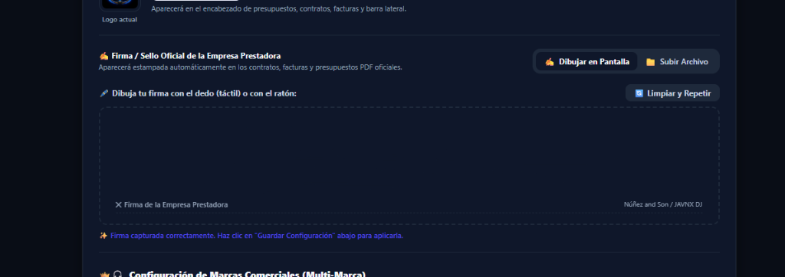
🔥 Figura 7.2: Tarifa por máquina: Si el cliente solicita 2 fuentes de fuego frío, el sistema calcula 60 € x 2 = 120 € automáticamente.
💡
Regla de Negocio - Fuego Frío: El fuego frío se tarifica por número de máquinas físicas (60 € por máquina). Si una pareja desea 2 máquinas (para los laterales del baile), el sistema calcula 120 €. Si desean 4 máquinas para una entrada espectacular, el cálculo será 240 €.
Resumen Económico, Base Imponible y Fianza de Reserva
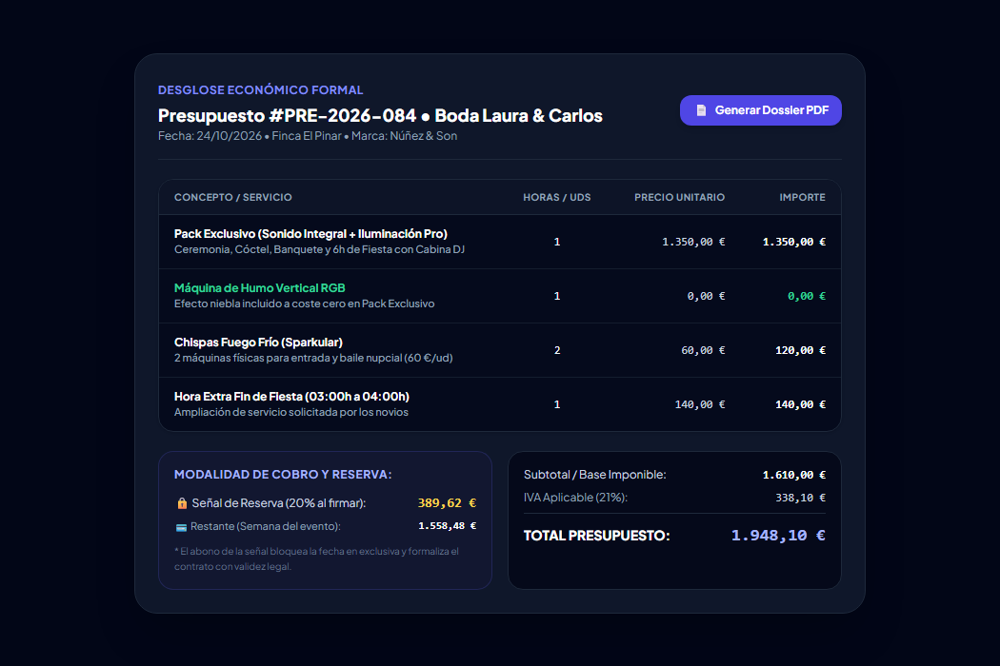
💶 Figura 7.3: Desglose financiero con Base Imponible, IVA (21%), Total Presupuestado y Fianza de Reserva para formalizar el contrato.
8 Dossier Comercial en PDF con Fecha de Caducidad
Para evitar que un cliente pretenda contratar meses después exigiendo precios antiguos de una temporada anterior, todos los presupuestos y dossiers generados en PDF incluyen una fecha de caducidad automática (validez habitual de 15 a 30 días desde su emisión):
Dossier PDF Oficial con Sello de Validez Temporal
https://app.nunezandson.com/quote/{quote}/pdf
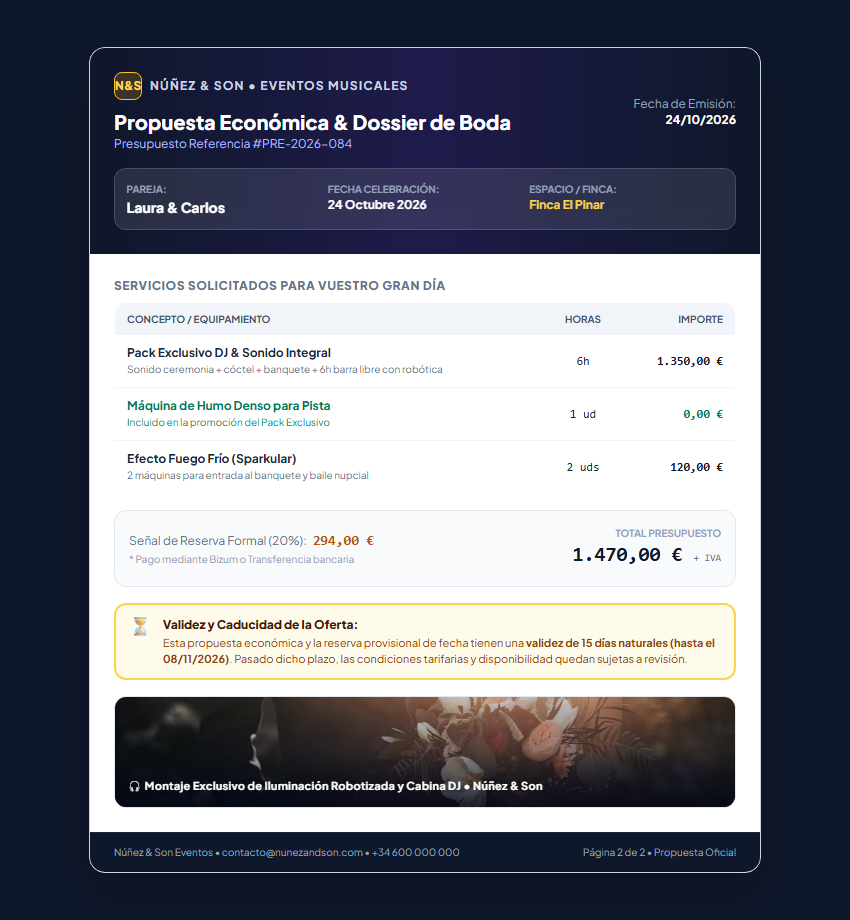
📄 Figura 8.1: Dossier comercial oficial descargado en formato PDF con especificación de servicios, packs y cláusula de caducidad de oferta.
⚠️
Protección ante fluctuación de precios: Si un cliente contacta habiendo vencido la fecha de validez indicada en el dossier, tienes el respaldo contractual para recalcular el presupuesto con las tarifas vigentes o aplicar suplementos de temporada alta.
⚙️
Personalización del Dossier (Ajustes → Dossier y Propuestas):
- Días de Validez: Configura el plazo en "⏳ Caducidad y Validez de las Propuestas" (por defecto: 15 días) para calcular la fecha límite en PDF y WhatsApp.
- Foto Panorámica de Fiesta & Montaje: Sube una imagen horizontal en "📸 Foto Panorámica de Fiesta & Montaje" para cubrir con elegancia el pie de la página 2 y anclar el pie de página de contacto en el borde inferior.
9 Contratos Digitales y Firma Online Certificada
Una vez aprobado el presupuesto, el sistema genera un contrato vinculante. La pareja puede firmar cómodamente en pantalla desde su propio teléfono móvil sin imprimir un solo papel:
🔗 Enlace del Portal de Firma: https://app.nunezandson.com/contrato/{token_seguro}
Portal de Firma Digital en Pantalla para Clientes
https://app.nunezandson.com/contrato/a8b9...f2
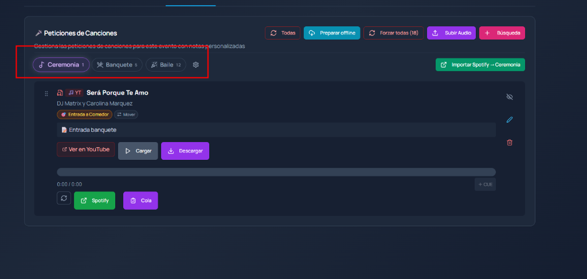
✍️ Figura 9.1: Lienzo interactivo donde los novios firman con el dedo desde su smartphone, registrando IP, navegador y marca de tiempo legal.
10 Escaleta Musical y Momentos Especiales
La pestaña Música centraliza la planificación de canciones para cada momento clave del banquete y la fiesta:
Escaleta de Momentos Clave • Entrada, Tarta, Ramos y Baile
https://app.nunezandson.com/admin/events/{id}#music
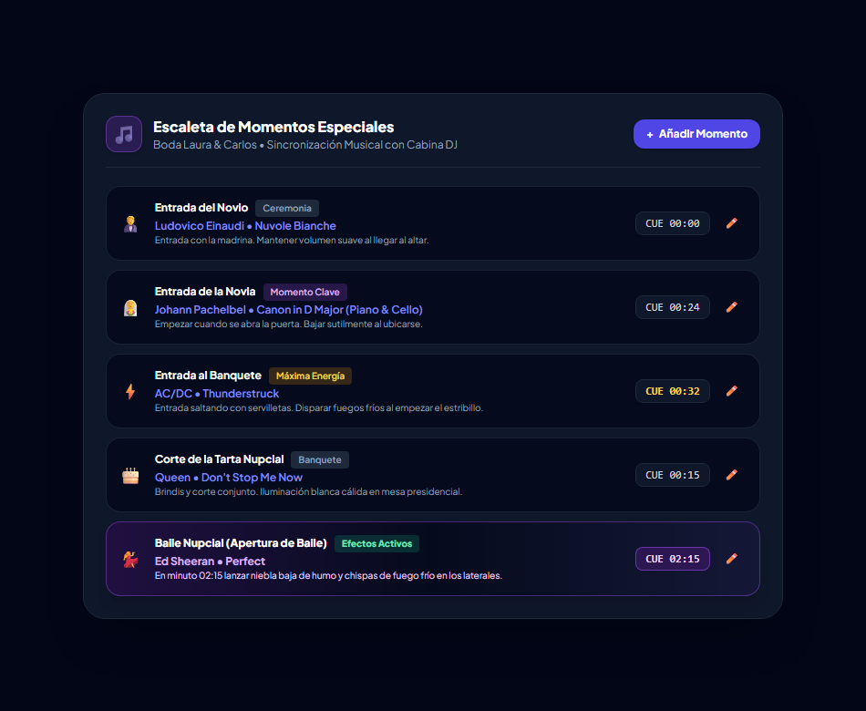
🎵 Figura 10.1: Planificación de temas imprescindibles por momento (Entrada al banquete, Corte de tarta, Entrega de ramos, Primer baile).
Formulario Online para los Novios
A través del enlace público /guest/form/{token}, la pareja introduce sus canciones favoritas, los temas que imprescindiblemente deben sonar (Must Play) y aquellos que bajo ningún concepto deben sonar (Do Not Play).
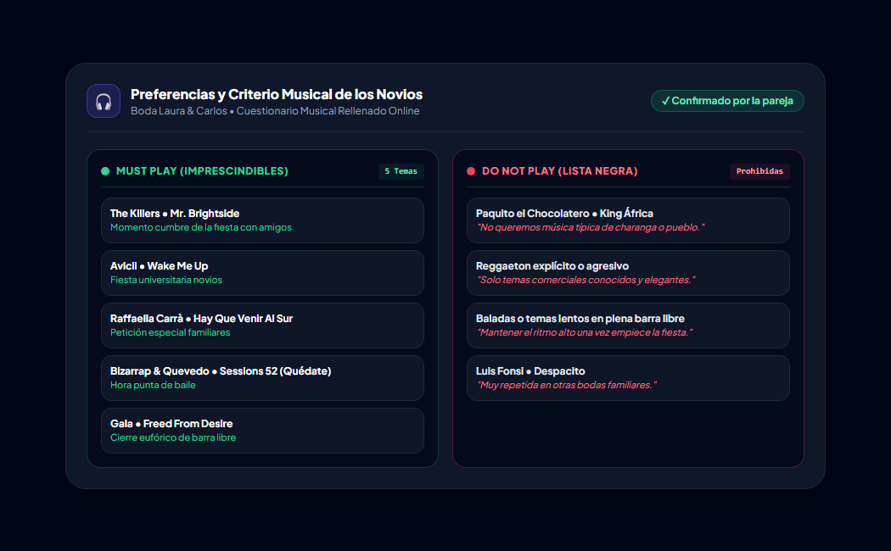
📋 Figura 10.2: Listado de peticiones de los novios con notas especiales.
11 Modo Cabina DJ en Directo y Peticiones QR (Tiempo Real 3s)
Durante la noche del evento, el DJ puede abrir el Modo Cabina Live (/live/{token}) en un iPad o tablet sobre su cabina:
Modo Cabina DJ en Directo • Interfaz Táctil con Refresco cada 3 Segundos
https://app.nunezandson.com/live/{token}
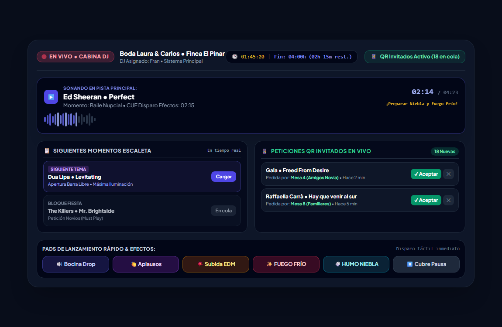
🎛️ Figura 11.1: Pantalla táctil de directo para el DJ con escaleta de momentos en vivo y bandeja de peticiones de invitados sincronizada cada 3 segundos.
📱
Código QR para Invitados en Tiempo Real (3s): Colocando el cartel con código QR en la barra o en las mesas, los invitados acceden a /peticiones/{token} para pedir canciones desde su móvil sin interrumpir físicamente al DJ en la cabina. En cuanto el invitado pulsa "Enviar", la petición aparece automáticamente en la pantalla del DJ en menos de 3 segundos sin necesidad de recargar la página.
12 Inventario y Material Técnico
El módulo Inventario (/admin/inventory) asegura el control absoluto de los equipos de sonido, iluminación, microfonía y efectos para evitar olvidos antes de cargar la furgoneta:
Control de Inventario y Almacén Técnico
https://app.nunezandson.com/admin/inventory
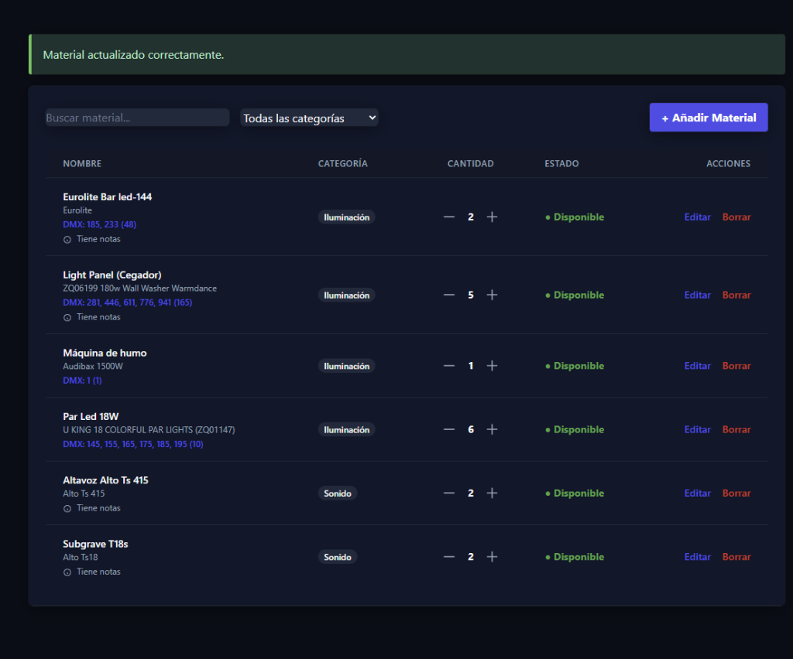
📦 Figura 12.1: Registro de altavoces, puentes de iluminación, máquinas de humo, cables y direccionamiento DMX por evento.
13 Calculadora Pública de Presupuestos (/presupuesto) y Vinculación con Leads
Para captar parejas directamente desde la web o para que los contactos recién entrados por email elijan los servicios que desean contratar, la aplicación incluye la calculadora interactiva abierta:
🌐 URL Pública: https://app.nunezandson.com/presupuesto • https://app.javnxdj.com/presupuesto
Calculadora Pública de Presupuestos para Clientes
https://app.nunezandson.com/presupuesto
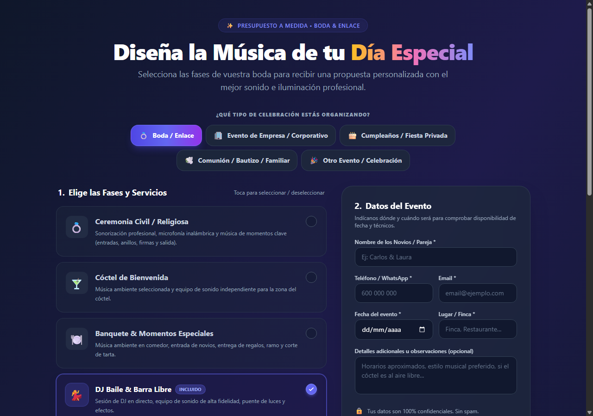
🧮 Figura 13.1: Cotizador interactivo donde los novios seleccionan ceremonia, cóctel, banquete, horas de barra libre y efectos especiales.
🔗
Vinculación Inteligente sin Duplicados: Cuando envías el WhatsApp de "👋 1er Contacto + /presupuesto" a un lead que ya había entrado desde Madrigal Marketing o Bodas.net, y la pareja rellena sus servicios en /presupuesto, el sistema detecta automáticamente su ficha por su teléfono o nombre y adjunta el presupuesto con los servicios solicitados directamente dentro de su evento existente (sin duplicar el evento).
14 Resumen de Procedimientos y Buenas Prácticas
📋 Flujo Comercial Recomendado (Método Madrigal)
- Entrada Automática del Lead: El correo de Madrigal Marketing o Bodas.net se importa solo y recibes el aviso por WhatsApp.
- Primer Contacto (Minuto 1): Entra a la ficha del evento y pulsa "👋 1er Contacto + /presupuesto" para confirmar que la fecha está libre y pedirles que seleccionen los servicios que necesitan en
/presupuesto.
- Envío de Dossier PDF: Revisa el presupuesto generado, descarga el Dossier PDF con fecha de caducidad y envíalo con "📑 Envío Dossier".
- Seguimiento por Etapas: Usa los botones rápidos Día 3 (Dudas), Día 7 (Escasez 24h), Día 10 (Técnica NO) o Cierre de Expediente.
- Posicionamiento ante Precio: Si dicen que "se va de presupuesto", elige entre "💰 Objeción Precio (Adaptar)" o "👑 No es nuestro cliente (Precio)" para descartar con máxima elegancia y liberar la fecha.
💡 Consejos Clave de Uso
- Modo Oscuro y Pestañas en 2 Filas: Tanto la ficha de eventos como Configuración muestran todas sus pestañas visibles sin barras ocultas y con alto contraste en Modo Oscuro.
- Letra de DNI Automática: Escribe solo los 8 números del DNI en cualquier campo y deja que el sistema calcule y valide la letra oficial.
- Eliminación Segura de Eventos: Si borras un evento importado por correo, su huella queda registrada para que el sincronizador IMAP no vuelva a crearlo nunca.
- Cabina en Vivo (3s): Ten abierto
/live/{token} durante la fiesta para recibir las peticiones QR de los invitados al instante.
Sistema de Gestión Integral de Eventos Musicales
Documentación técnica y operativa elaborada para Núñez & Son y JAVNXDJ • 2026 (Ejemplos con datos ficticios)